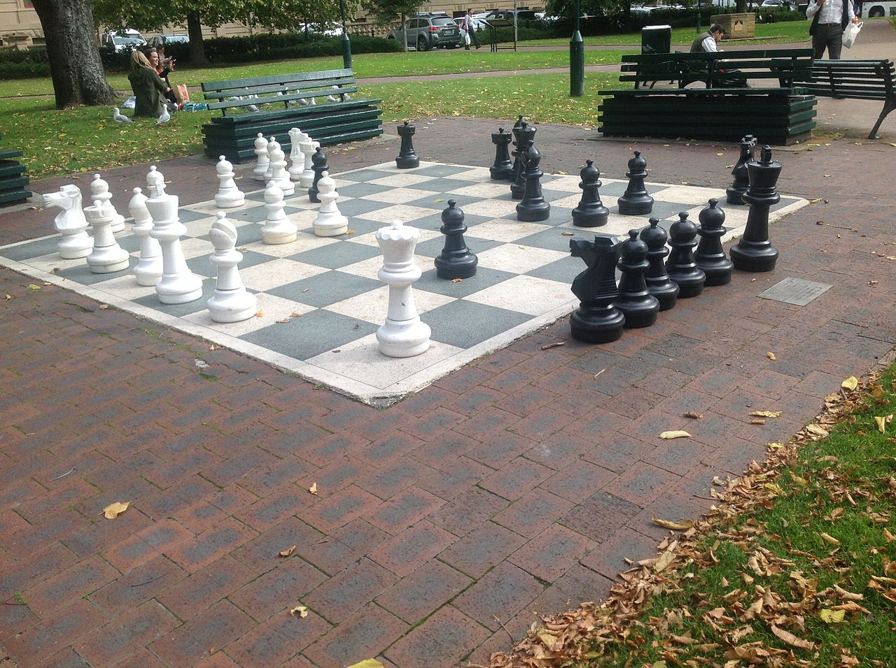
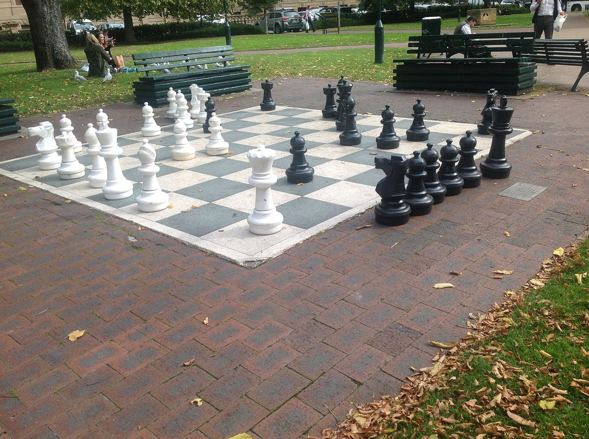

CHESS
Main
1200–1700: Origins of the modern game
Knights Templar playing chess, Libro de los juegos, 1283 Around 1200, the rules of shatranj started to be modified in southern Europe, and around 1475, several major changes made the game essentially as it is known today. These modern rules for the basic moves had been adopted in Italy and Spain. Pawns gained the option of advancing two squares on their first move, while bishops and queens acquired their modern abilities. The queen replaced the earlier vizier chess piece towards the end of the 10th century and by the 15th century had become the most powerful piece; consequently modern chess was referred to as "Queen's Chess" or "Mad Queen Chess". Castling, derived from the "kings leap" usually in combination with a pawn or rook move to bring the king to safety, was introduced. These new rules quickly spread throughout western Europe. A tactical puzzle from Lucena's 1497 book Writings about the theory of how to play chess began to appear in the 15th century. The Repetición de Amores y Arte de Ajedrez (Repetition of Love and the Art of Playing Chess) by Spanish churchman Luis Ramirez de Lucena was published in Salamanca in 1497. Lucena and later masters like Portuguese Pedro Damiano, Italians Giovanni Leonardo Di Bona, Giulio Cesare Polerio and Gioachino Greco, and Spanish bishop Ruy López de Segura developed elements of openings and started to analyze simple endgames.
1700–1873: The Romantic Era in chess
In the 18th century, the center of European chess life moved from the Southern European countries to France. The two most important French masters were François-André Danican Philidor, a musician by profession, who discovered the importance of pawns for chess strategy, and later Louis-Charles Mahé de La Bourdonnais, who won a famous series of matches with the Irish master Alexander McDonnell in 1834. Centers of chess activity in this period were coffee houses in major European cities like Café de la Régence in Paris and Simpson's Divan in London. The rules concerning stalemate were finalized in the early 19th century. Also in the 19th century, the convention that White moves first was established (formerly either White or Black could move first). Finally the rules around castling were standardized – variations in the castling rules had persisted in Italy until the late 19th century. The resulting standard game is sometimes referred to as Western chess or international chess, particularly in Asia where other games of the chess family such as xiangqi are prevalent. Since the 19th century, the only rule changes have been technical in nature, for example establishing the correct procedure for claiming a draw by repetition. As the 19th century progressed, chess organization developed quickly. Many chess clubs, chess books, and chess journals appeared. There were correspondence matches between cities; for example, the London Chess Club played against the Edinburgh Chess Club in 1824. Chess problems became a regular part of 19th-century newspapers; Bernhard Horwitz, Josef Kling, and Samuel Loyd composed some of the most influential problems. In 1843, von der Lasa published his and Bilguer's Handbuch des Schachspiels (Handbook of Chess), the first comprehensive manual of chess theory. Chess was occasionally criticized in the 19th century as a waste of time. The "Immortal Game", Anderssen vs. Kieseritzky, 1851 The first modern chess tournament was organized by Howard Staunton, a leading English chess player, and was held in London in 1851. It was won by the German Adolf Anderssen, who was hailed as the leading chess master. His brilliant, energetic attacking style was typical for the time. Sparkling games like Anderssen's Immortal Game and Evergreen Game or Morphy's "Opera Game" were regarded as the highest possible summit of the chess art. The romantic era was characterized by opening gambits (sacrificing pawns or even pieces), daring attacks, and brazen sacrifices. Many elaborate and beautiful but unsound move sequences called "combinations" were played by the masters of the time. The game was played more for art than theory. A profound belief that chess merit resided in the players' genius rather than inherent in the position on the board pervaded chess practice. Deeper insight into the nature of chess came with the American Paul Morphy, an extraordinary chess prodigy. Morphy won against all important competitors (except Staunton, who refused to play), including Anderssen, during his short chess career between 1857 and 1863. Morphy's success stemmed from a combination of brilliant attacks and sound strategy; he intuitively knew how to prepare attacks. 1873–1945: Birth of a sport Prague-born Wilhelm Steinitz beginning in 1873 described how to avoid weaknesses in one's own position and how to create and exploit such weaknesses in the opponent's position. The scientific approach and positional understanding of Steinitz revolutionized the game. Steinitz was the first to break a position down into its components. Before Steinitz, players brought their queen out early, did not completely develop their other pieces, and mounted a quick attack on the opposing king, which either succeeded or failed. The level of defense was poor and players did not form any deep plan. In addition to his theoretical achievements, Steinitz founded an important tradition: his triumph over the leading German master Johannes Zukertort in 1886 is regarded as the first official World Chess Championship. Steinitz lost his crown in 1894 to a much younger player, the German mathematician Emanuel Lasker, who maintained this title for 27 years, the longest tenure of any world champion. Chess Players, Cairo by Stanisław Chlebowski (1835–1884) After the end of the 19th century, the number of master tournaments and matches held annually quickly grew. Some sources state that in 1914 the title of chess Grandmaster was first formally conferred by Tsar Nicholas II of Russia to Lasker, Capablanca, Alekhine, Tarrasch, and Marshall, but this is a disputed claim. The tradition of awarding such titles was continued by the World Chess Federation (FIDE), founded in 1924 in Paris. In 1927, the Women's World Chess Championship was established; the first to hold the title was Czech-English master Vera Menchik. It took a prodigy from Cuba, José Raúl Capablanca (World Champion 1921–1927), who loved simple positions and endgames, to end the German-speaking dominance in chess; he was undefeated in tournament play for eight years, until 1924. His successor was Russian-French Alexander Alekhine, a strong attacking player who died as the world champion in 1946. He briefly lost the title to Dutch player Max Euwe in 1935 and regained it two years later. Between the world wars, chess was revolutionized by the new theoretical school of so-called hypermodernists like Aron Nimzowitsch and Richard Réti. They advocated controlling the center of the board with distant pieces rather than with pawns, thus inviting opponents to occupy the center with pawns, which become objects of attack.

1873–1945: Birth of a sport
Prague-born Wilhelm Steinitz beginning in 1873 described how to avoid weaknesses in one's own position and how to create and exploit such weaknesses in the opponent's position.The scientific approach and positional understanding of Steinitz revolutionized the game. Steinitz was the first to break a position down into its components. Before Steinitz, players brought their queen out early, did not completely develop their other pieces, and mounted a quick attack on the opposing king, which either succeeded or failed. The level of defense was poor and players did not form any deep plan. In addition to his theoretical achievements, Steinitz founded an important tradition: his triumph over the leading German master Johannes Zukertort in 1886 is regarded as the first official World Chess Championship. Steinitz lost his crown in 1894 to a much younger player, the German mathematician Emanuel Lasker, who maintained this title for 27 years, the longest tenure of any world champion. Chess Players, Cairo by Stanisław Chlebowski (1835–1884) After the end of the 19th century, the number of master tournaments and matches held annually quickly grew. Some sources state that in 1914 the title of chess Grandmaster was first formally conferred by Tsar Nicholas II of Russia to Lasker, Capablanca, Alekhine, Tarrasch, and Marshall, but this is a disputed claim.[note 4] The tradition of awarding such titles was continued by the World Chess Federation (FIDE), founded in 1924 in Paris. In 1927, the Women's World Chess Championship was established; the first to hold the title was Czech-English master Vera Menchik. It took a prodigy from Cuba, José Raúl Capablanca (World Champion 1921–1927), who loved simple positions and endgames, to end the German-speaking dominance in chess; he was undefeated in tournament play for eight years, until 1924. His successor was Russian-French Alexander Alekhine, a strong attacking player who died as the world champion in 1946. He briefly lost the title to Dutch player Max Euwe in 1935 and regained it two years later. Between the world wars, chess was revolutionized by the new theoretical school of so-called hypermodernists like Aron Nimzowitsch and Richard Réti. They advocated controlling the center of the board with distant pieces rather than with pawns, thus inviting opponents to occupy the center with pawns, which become objects of attack.
 

1945–present: Post-World War II era
...After the death of Alekhine, a new World Champion was sought. FIDE, which has controlled the title since then (except for one interruption), ran a tournament of elite players. The winner of the 1948 tournament, Russian Mikhail Botvinnik, started an era of Soviet dominance in the chess world. Until the end of the Soviet Union, there was only one non-Soviet champion, American Bobby Fischer (champion 1972–1975). Botvinnik revolutionized opening theory. Previously Black strove for equality, to neutralize White's first-move advantage. As Black, Botvinnik strove for the initiative from the beginning. In the previous informal system of World Championships, the current champion decided which challenger he would play for the title and the challenger was forced to seek sponsors for the match. FIDE set up a new system of qualifying tournaments and matches. The world's strongest players were seeded into Interzonal tournaments, where they were joined by players who had qualified from Zonal tournaments. The leading finishers in these Interzonals would go on the "Candidates" stage, which was initially a tournament, and later a series of knockout matches. The winner of the Candidates would then play the reigning champion for the title. A champion defeated in a match had a right to play a rematch a year later. This system operated on a three-year cycle. Botvinnik participated in championship matches over a period of fifteen years. He won the world championship tournament in 1948 and retained the title in tied matches in 1951 and 1954. In 1957, he lost to Vasily Smyslov, but regained the title in a rematch in 1958. In 1960, he lost the title to the 23-year-old Latvian prodigy Mikhail Tal, an accomplished tactician and attacking player. Botvinnik again regained the title in a rematch in 1961. Following the 1961 event, FIDE abolished the automatic right of a deposed champion to a rematch, and the next champion, Armenian Tigran Petrosian, a player renowned for his defensive and positional skills, held the title for two cycles, 1963–1969. His successor, Boris Spassky from Russia (champion 1969–1972), won games in both positional and sharp tactical style. The next championship, the so-called Match of the Century, saw the first non-Soviet challenger since World War II, American Bobby Fischer, who defeated his Candidates opponents by unheard-of margins and clearly won the world championship match. In 1975, however, Fischer refused to defend his title against Soviet Anatoly Karpov when FIDE did not meet his demands, and Karpov obtained the title by default.[44] Fischer modernized many aspects of chess, especially by extensively preparing openings. Karpov defended his title twice against Viktor Korchnoi and dominated the 1970s and early 1980s with a string of tournament successes. Karpov's reign finally ended in 1985 at the hands of Garry Kasparov, another Soviet player from Baku, Azerbaijan. Kasparov and Karpov contested five world title matches between 1984 and 1990; Karpov never won his title back. In 1993, Garry Kasparov and Nigel Short broke with FIDE to organize their own match for the title and formed a competing Professional Chess Association (PCA). From then until 2006, there were two simultaneous World Champions and World Championships: the PCA or Classical champion extending the Steinitzian tradition in which the current champion plays a challenger in a series of many games, and the other following FIDE's new format of many players competing in a tournament to determine the champion. Kasparov lost his Classical title in 2000 to Vladimir Kramnik of Russia. The World Chess Championship 2006, in which Kramnik beat the FIDE World Champion Veselin Topalov, reunified the titles and made Kramnik the undisputed World Chess Champion. In September 2007, he lost the title to Viswanathan Anand of India, who won the championship tournament in Mexico City. Anand defended his title in the revenge match of 2008, 2010 and 2012. In 2013, Magnus Carlsen beat Anand in the 2013 World Chess Championship. He defended his title the following year, again against Anand. Carlsen confirmed his title in 2016 against the Russian Sergey Karjakin [52] and in 2018 against the American Fabiano Caruana, in both occasions by a rapid tiebreaker match after equality in 12 games of classical time control, and is the reigning world champion.